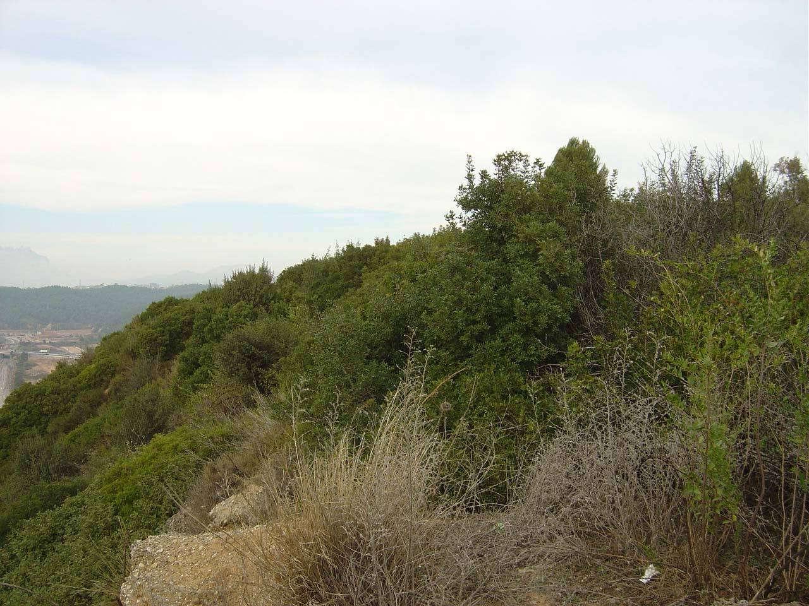
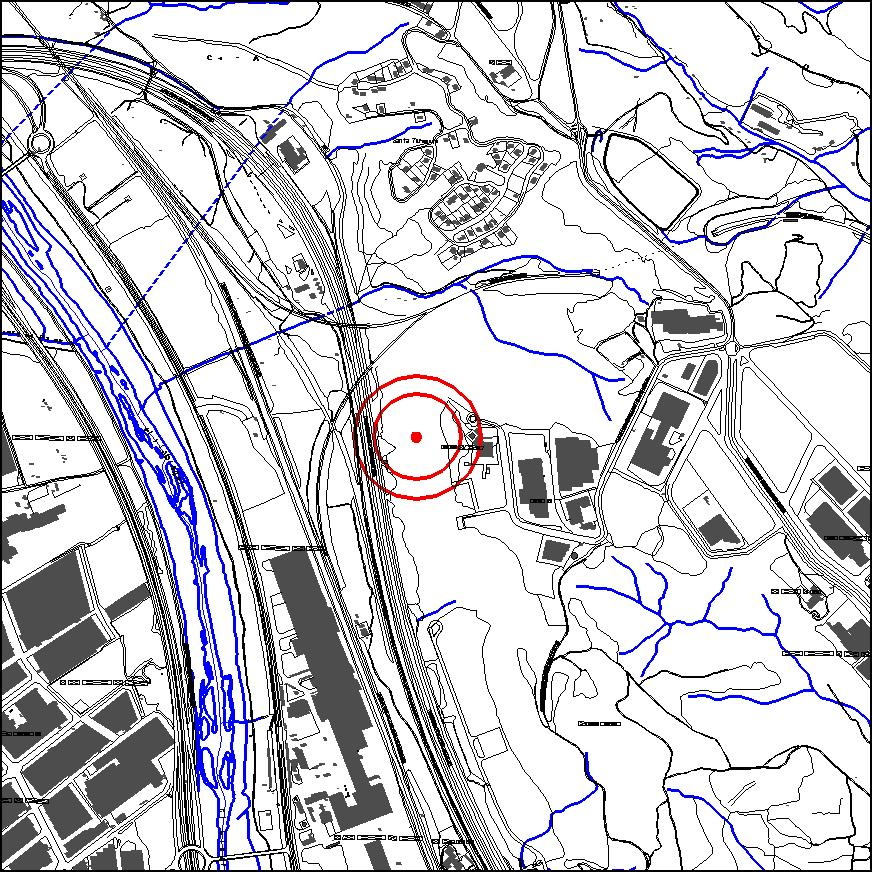

|  |  |
Nom de l’element: Turó de les Guàrdies
Clau d’identificació: D.14
Nucli o indret:
UTM: X= 415.063, Y= 4.590.722, 160m snm.
Règim del sòl: sòl urbà.
Característiques:
Turó que compta amb una coberta de matollar compost per roldor (Coriaria myrtifolia ), pi blanc jove (Pinus halepensis ), esbarzer (Rubus ulmifolius) i llentiscle (Pistacia lentiscus). S’han trobat restes prehistòriques al realitzar moviments de terres a la zona (1965).
1.2. Estat de conservació:
Dolent, degradat per la manca de gestió forestal i amenaçat pel P.I. Agripina, pels residus dipositats incontroladament i per la contaminació acústica generada pel P.I. de Sant Vicenç i les vies de comunicació.
1.3. Ús actual:
Hi ha ubicat el P.I. d’Agripina. D’altra banda, acull un número important d’espècies d’aus.
1.4. Accés:
Accés fàcil des del P.I. Agripina o des del P.I. Santa Teresita.
Font potencial de restes arqueològiques prehistòriques.
3.1. Usos admesos:
Espais lliures.
3.2. Condicions d’ordenació:
Segons Pla Especial a redactar.
3.3. Accés
P.I. Agripina o des del P.I. Santa Teresita.
BPU (Bé Protegit Urbanísticament)